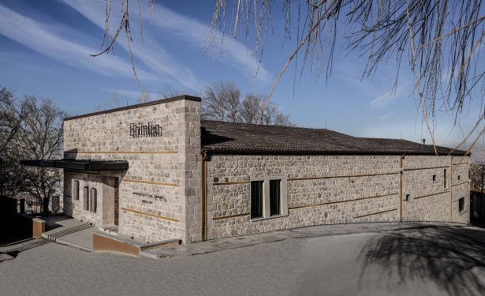

Ankara arkeoloji müzeleri, kalplerimizde ayrı bir yeri olan başketin önemli bir parçasıdır. Bu nedenle sizleri bu güzel şehrin ilklere şahit olacağınız arkeoloji dünyasında gezintiye çıkarmak istedik.
Anadolu Medeniyetleri Müzesi (Altındağ)
Anadolu Medeniyetleri Müzesi, Ankara’nın Altındağ ilçesinde yer alıyor. Bina eski adıyla ‘’Kurşunlu Han’’ olarak bilinir. Şehirde ilk müze, 1921 yılında Akkale’de kurulan ''Eti Müzesi''dir. Atatürk’ün isteği üzerine müzenin büyütülmesi ve merkeze taşınmasına karar verilmiştir. Böylelikle daha geniş bir mekân olan Kurşunlu Han, 1943 yılında müze binası olarak hizmet vermeye başlamıştır. Peki, dünyanın sayılı müzelerinden biri olan bu yapı kaç bölümden oluşuyor? Hemen söyleyelim; gezmeye doyamayacağınız tam 11 bölüme sahip! İlk başlarda içerisinde yalnızca Hitit eserleri yer alan müzende, Paleolitik Çağ’dan Türkiye Cumhuriyeti’nin kuruluşuna ve dolayısıyla Ankara’nın tarihî gelişimine kadar doyasıya vakit geçirebileceğiniz bölümler mevcut. Bilinen en eski harita olan Çatalhöyük haritasını da burada görmek mümkün. Cumhuriyet’in ilanından sonra gerçekleştirilen ilk resmi kazı niteliğindeki Ahlatlıbel’den elde edilen buluntular da burada sergileniyor. Müze yaz mevsiminde her gün 08:30-19:00, kış mevsimindeyse 08:30-17:30 saatleri arasında açıktır. Varsa müze kartınızla giriş yapabilirsiniz. Aksi takdirde giriş ücreti ödemeniz gerekiyor. Aynı zamanda sesli rehberlik hizmetinden de faydalanabilirsiniz.
Erimtan Arkeoloji ve Sanat Müzesi (Altındağ)
İkinci durağımız olan Erimtan Arkeoloji ve Sanat Müzesi, sanatsever bir iş insanı olan Yüksel Erimtan’ın koleksiyonuna ait eserlerin sergilendiği özel bir müzedir. Yüksel Erimtan, ülkede bulunan kültür varlıklarını koruyup tanıtmayı amaçlamıştır. Bu nedenle Yüksel Erimtan Kültür ve Sanat Vakfı’nı kurmuş ve daha sonra bu özel müzenin 2015 yılında hizmete açılmasını sağlamıştır. Müze içerisinde Roma, Urartu, Hitit ve Bizans dönemlerine ait eserler sergileniyor. Ee bu kadar mı? Elbette değil. Müzede tüm sanatseverlere çeşitli öğrenme programları, süreli sergiler ve Türk müzisyenler tarafından verilen konserler de düzenleniyor. Haftanın altı günü 10:00-17:00 saatlerinde ziyaret edebilirsiniz. Araçla gidecekler için müzenin kendi otoparkı olmadığını belirtelim. Ancak bölge civarında halka açık ücretli otoparklar vardır. Müzenin kapalı olduğu zamanlar ise dini bayramların arife ve ilk günleri, 31 Aralık- 1 Ocak ve Pazartesi günleridir. Müze kart geçersizdir. Yetişkinler cüzi bir miktar ödeyerek, öğrenci, öğretmen ve 65 yaş üstündekiler indirimli, 4 yaşından küçük çocuklar ve engelli ziyaretçiler ücretsiz bir şekilde müzeyi gezebilir.
ODTÜ Arkeoloji Müzesi (Çankaya)
ODTÜ Arkeoloji Müzesi, Türkiye’nin ilk üniversite müzesidir. Ankara’nın Çankaya ilçesinde bulunan ODTÜ yerleşkesinde yer alır.1969 yılında eski ODTÜ rektörü Kemal Kurdaş tarafından kurulmuş ve günümüze kadar özel müze olarak varlığını sürdürmüştür. Müze içerisinde Koçumbeli’de yapılan kazılar sonucunda ortaya çıkan Erken Tunç Çağı buluntularıyla Geç Frig Çağı’na tarihlenen Yalıncak’tan elde edilen eserler sergileniyor. Aynı zamanda ODTÜ’lü araştırmacılar tarafından Ankara Frig nekropolünde yapılan çalışmalardan elde edilen eserler de burada yer alıyor. Müze bünyesinde sunumlar, çeşitli eğitim programları ve arkeolojik film veya belgesel gösterimleri düzenleniyor. Bu faaliyetler yalnızca yetişkinler veya üniversite öğrencilerine değil, çocuklara da hitap ediyor. Hafta içi her gün 09:30-12:30 ile 14:00-17:00 saatlerinde ziyaret etmek mümkündür. Rehber eşliğinde gezmek isteyenlerin önceden randevu alması gerekir.
Roma Hamamı Açık Hava Müzesi ve Ören Yeri (Altındağ)
Bir başka durağımız ise yine Altındağ ilçesinde bulunan Ankara Roma Hamamı ve Açıkhava Müzesi’dir. M.S. 3. yüzyılda Roma imparatoru Caracalla döneminde hamamın yaptırıldığı biliniyor. 1997-2001 yılları arasında yapılan çalışmalar neticesinde de açık hava müzesi olarak hizmete açılmıştır. Bu alanın aslında Frig, Roma, Bizans ve Selçuklu dönemine tarihlenen bir höyük olduğu tespit edilmiştir. Ören yerinde mezar stellerinden yazıtlı bloklara, sütun başlıklarından heykellere kadar gruplara ayrılmış mimari parçalar sergileniyor. Giriş yaptıktan sonra Antik Ancyra şehrine ait sütunlu bir yol ve Roma Hamamı ile dövüş sporlarının uygulandığı alan olan palaestraya ait kalıntıları görebilirsiniz. Daha sonra lahit ve aslan heykeller, mezar stelleri ve su boruları sizleri karşılayacaktır. Müzeye hafta içi her gün giriş yapabilirsiniz. Ziyaret saatleri 08:30-17:00’dır. Müze kart geçerlidir. Kartınız yoksa endişeye kapılmayınız; giriş ücreti oldukça uygun. Yüzyıllar boyunca köprü niteliği taşıyan Anadolu’ya yolu düşen uygarlıkların hepsi birbirinden farklı kültürlere, yaşam tarzlarına sahip olmuştur. Bahsetmiş olduğumuz Ankara arkeoloji müzeleri bu konu hakkında merak uyandıracak ve belki de daha önce hiç farketmediğiniz bir alana ilgi duymanızı sağlayacaktır. Son olarak müze gişelerinin erkenden kapatıldığını hatırlatalım. Ziyaretlerinizi son dakikalara bırakmamanızı ve kapanış saatinden en az yarım saat önce orada bulunmanızı tavsiye ediyoruz.
Gordion Müzesi (Polatlı)
Gordion Müzesi, Ankara’nın Yassıhöyük köyünde bulunan 1963 yılında kurulmuş bir müzedir. Gordion, Frigya’nın başkenti olan antik kenttir. Hitit imparatorluğu yıkıldıktan sonra hakimiyet Friglerin eline geçmiştir. Müze de adını bulunduğu bu bölgeden alıyor. İçerisinde Eski Tunç Çağı’ndan Erken Frig Dönemi ve Erken Demir Çağı’na ait eserler sergileniyor. Bu eserler arasında çanak çömlekler, demir aletler ve dokumacılık için kullanılan aletler vardır. Devamındaysa Helenistik Çağ ve Roma Dönemi’ne ait malzemelerle Gordion’da bulunmuş sikke ve mühürleri göreceksiniz. Birçok tümülüsün yer aldığı bu bölgede soyluları ziyaret etmeden gitmek olur mu hiç? Cevabınız hayır ise, Frig soylularının mezarları olan tümülüslerin bulunduğu ören yerine doğru ilerlemek isteyebilirsiniz. Ankara arkeoloji müzelerinden biri olan Gordion Müzesi’nde Müze kartı geçerlidir. Müze kartınız yoksa mütavazi bir ücret ödeyerek biletli giriş sağlayabilirsiniz. Müze ziyaret saatleri yaz mevsiminde hafta içi her gün 08:30-19:00, kış mevsiminde 08:30-17:30’dur.